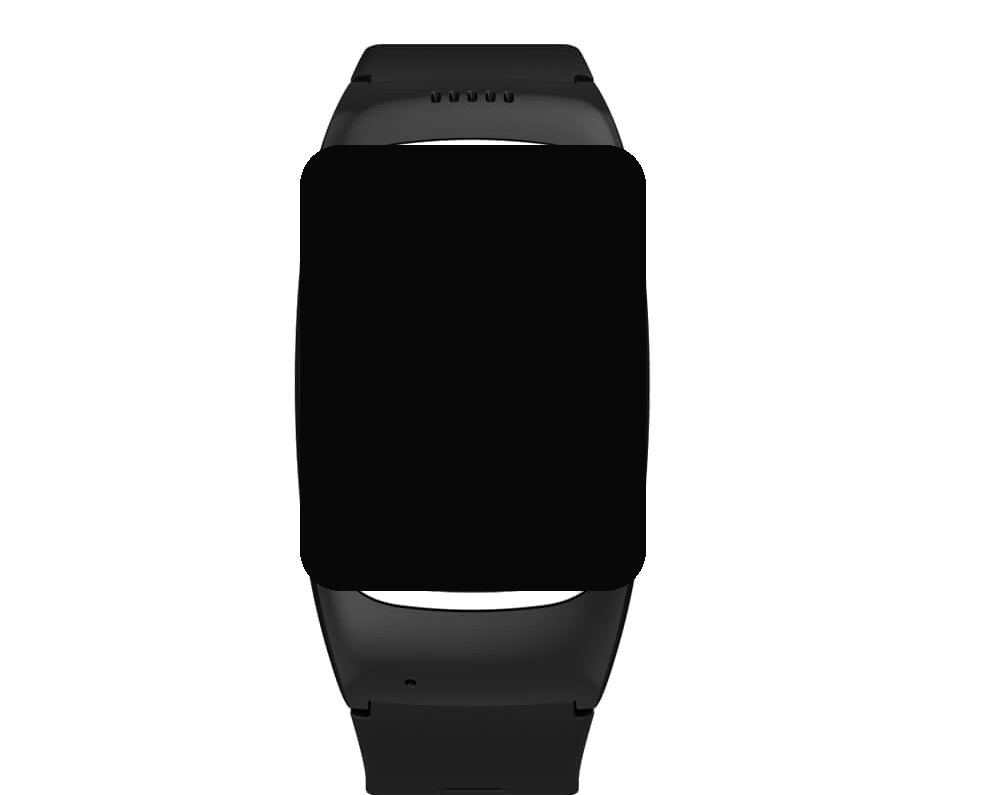

ojo guard
ojo guard · presentación
no venimos a prometer
que nunca vas a estar solo.
we're not here to promise
you'll never be alone.
el reloj

monitoreo
NÚCLEO · EN VALIDACIÓN
detección de caídas: implementada en código,
todavía no probada en cada caso real.
built into the code. not yet proven on every real fall.
ojo guard
algo cambió.
/ something changed.
seguimos construyendo, no imaginando.